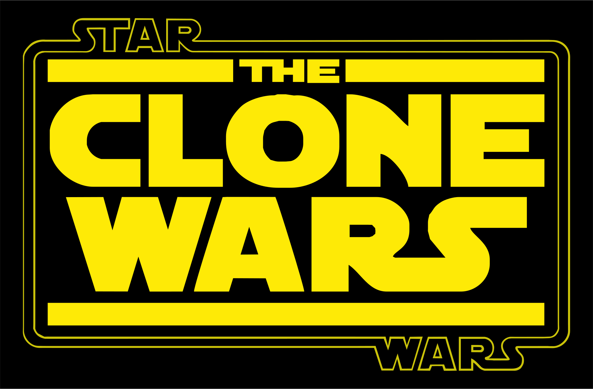
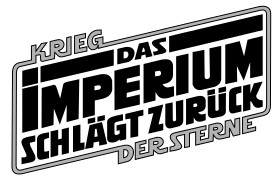

Star Wars beginnt natürlich nicht ab Episode 1 sondern hat eine sehr interessante aber auch noch unaufgeklärte Vergangenheit. Bei der aktuellen Timeline handelt es sich um die bekannte Story hinter Star Wars sprich alle Filme, Serien, usw.

Aenean condimentum odio a bibendum rhoncus. Ut mauris felis, volutpat eget porta faucibus, euismod quis ante.

In mattis elit vitae odio posuere, nec maximus massa varius. Suspendisse varius volutpat mattis. Vestibulum id magna est.
In mattis elit vitae odio posuere, nec maximus massa varius. Suspendisse varius volutpat mattis. Vestibulum id magna est.
In mattis elit vitae odio posuere, nec maximus massa varius. Suspendisse varius volutpat mattis. Vestibulum id magna est.